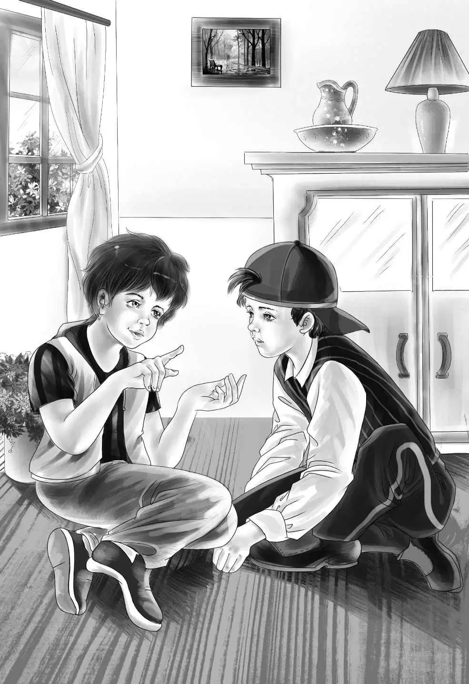

All the children begged Mike to tell what he knew about the man in the blue hat.
"No," said Mike. "I can't tell you now. I want to talk to Ben about this. I want to see Ben alone. "
"This is very important,Mike," said Mr. Carter. "If you know something it is your duty to tell me. "
"Oh,I'll tell you all right," said Mike. "Only you'll have to wait about one hour. "
"Why all the mystery?" asked Mr. Carter.
"Because I'm not sure," said Mike. "I'm not really sure of anything. I want to see Pat,too. "
"Well,let's go back to the ranch," said Henry. He did not think Mike really knew anything about the stranger.
"We have hardly seen Aunt Jane," said Violet. "We have been away almost all the time we have been here. "
"That was because there was a fire," said Benny. "We had to see about Mike's fire. "
Mr. Carter took the five children to Aunt Jane's house. Then he drove away. He said he had other business. Watch and Lady ran out to meet the children. The dogs were very glad to see them.
"Well," said Maggie,"you are not late. But I thought you were going to be. And we have a very funny lunch. "
"What is it?" asked Benny.
"Hot dogs," said Maggie. "Your Aunt Jane says all young people like hot dogs. "
"We do!" cried Benny. "And we don't get them very often. Hurrah for Aunt Jane!"
"Tell me all the news about the fire," said Aunt Jane. She sat at the head of the table. She gave the hot dogs to the children,but she did not eat them herself.
"I don't like hot dogs," she said smiling. "I like eggs better. "
The children took turns with the news. They told Aunt Jane all about the fire and meeting Mr. Carter again. They told her the plans for Mrs. Wood. Mike was very quiet. He did not talk very much.
"Mike is scared of you,Aunt Jane!" said Benny.
"I am not scared!" said Mike. "Miss Alden wouldn't hurt a fly. My brother Pat said so. "
"I certainly wouldn't hurt a nice boy like you,Mike," said Aunt Jane laughing. "You must go up and see your new room. It is right next to Benny's. "
Maggie said,"We have been working on it all morning. A nice clean bed,and a big empty closet for your things. "
"I haven't many things," said Mike.
"Haven't you any old birds'nests and stones and model airplanes?" asked Maggie.
"Oh,can I keep that kind of things?" cried Mike.
"Certainly," said Aunt Jane. "There's no good living here,if you can't have your own things. "
"Oh,oh!" cried Mike. "Can I have Spotty,too?"
"Yes," said Aunt Jane. "Lady always stays in my room. " She stopped. "But what will Watch say?"
"I don't think he will say much," said Mike. "They didn't fight on Surprise Island. "
"That's right,"said Henry to Aunt Jane. "They got along all right. "
"I'll be fine if I have Spotty," said Mike.
"He mustn't get up on your nice clean bed," said Maggie.
"Oh,no,he sleeps down the cellar when he's home," said Mike.
Aunt Jane said,"He won't sleep down the cellar here. You can have him in your room,but Maggie says not on your bed. "
Then Mike was quiet again. He seemed to be thinking.
After lunch,Henry telephoned to his grandfather miles away in Greenfield. He told Mr. Alden all about the fire. He didn't know that his grandfather knew it already. Mr. Carter had already called Mr. Alden.
"You say you know this boy Mike?" asked Mr. Alden.
"Yes,he used to go to school with Benny. We invited him to the picnic on Surprise Island. "
"Oh,I remember," said Mr. Alden. "He had a brother who was almost drowned. "
"Good for you,Grandfather!" cried Henry. "You never forget anything. Mike's mother hasn't any home now,and we want to give her that big empty room at the mine to make pies in. "
Mr. Alden said,"Is that all you want,Henry?"
"Almost," said Henry. "We'd like to buy a stove,and a sink,and a refrigerator for the room. We can buy them all here. "
"Go ahead,Henry," said Mr. Alden. "It's your money and your mine. It's a fine idea and a kind one. I had a plan for that room,but it can wait. This is more important. If you need anything more,ask Mr. Carter. And how is Watch?"
"Watch is right here,looking at me," said Henry. "You speak to him,Grandfather. "
"Hello,Watch!" called Mr. Alden.
"Bow-wow!" answered the dog. He put his feet up on the telephone table and wagged his tail.
"I heard him bark," said Mr. Alden,laughing. "And now I'll talk to the others. " Mr. Alden always did this. He talked with Violet,and Jessie and Aunt Jane and Benny.
"I'm the last one,Grandfather," said Benny. "But I was the next to the first to think of the stove. "
"I'm sure you were,Benny," said his grandfather. "You be a good boy,and take good care of the girls. "
"Yes,I will," said Benny. "You know what? They want a blue refrigerator! I want a white one,but I'll give in. "
"Good boy,"said Mr. Alden. "Good-by for now. "
After the telephone call, Mike said he wanted to see Benny alone.
"Come up and see your room," said Benny. "Then we can talk. "
Mike had no idea what a lovely room he would have. He looked around in surprise.
"This is neat,Ben," he said. "And right next to you. "
"My wall paper has jet planes on it," said Benny. "Aunt Jane picked it out for me. She's neat,too. "
"Listen,Ben," said Mike. "When we were up at the mine,I remembered something. "
"What was it?" asked Benny. The two boys sat down on the floor. They put their heads together.
"Well,you know I said we had to tie Spotty up because he barked?"
"I remember," said Benny.
"Well,he did bark. He barked at everyone,and he barked at the fire. He was so excited. But once he growled,Ben. "
"Oh,ho!I see!" cried Benny. "That's different. What did he growl at?"
"The man in the blue hat!"cried Mike. "I really don't remember what hat he had on. But I think I saw him at the fire. He was the one Spotty growled at. "
"I suppose Spotty never growls," said Benny.
"Never!" said Mike. "Unless he has some good reason. Now another thing,Ben. You remember the newspaper picture of Pat? Now,I ought to have been in that picture. "
"Why?" asked Benny.
"Well,I was right beside Pat. The picture cut me off. I was always up at the mine before you came. I knew everybody. And I saw that stranger myself. He was a short man. "

Benny nodded. "Did you talk to him?"
"No,I didn't. But I saw him talking to Mr. McCarthy. And I think he was the man Spotty growled at!"
"Oh,you do!" cried Benny. "Then he must be the man that said you set the fire!"
"That's right," said Mike. "Isn't that a mystery?"
"Yes,it is," agreed Benny. "The next thing to do is see Mr. McCarthy. "
"Right!" said Mike. "But we won't rush it! Mr. Carter said I ought to become an FBI agent. "
"Yes,he did," said Benny. "And I'd like to see that newspaper picture again. "
So the two boys ran downstairs to find the old newspaper.